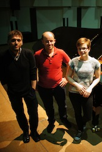
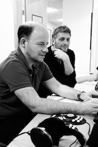
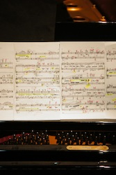

Clare releases her third disc for BIS Records, of solo piano music by British composer Ken Hesketh, on the 6 June 2016. This will include four works: Horae (pro clara) (2011/12), Notte Oscura (2002), Through Magic Casements (2008) and Three Japanese Miniatures (2002).
▸ Download the press release as a .docx or a .pdf file.
|
|
|
▸ Album Cover |
▸ Clare Hammond |
▸ Clare Hammond |
Movement 2 - 'Velocissima assai (as fleet as the tiniest humming bird)'
Movement 6 - 'Nervoso, ma dolce (flessibile)'
Movement 10 - 'Scorrevole (ma meccanico) (like an 'evening full of the linnet's wings')'
With the permission of Schott Music.
|  |  |  |
Click here to view more photos.
This disc has been supported by the following organisations:
 |
 |
▸ Fidelio Charitable Trust |
▸ RVW Trust |